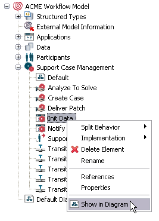

Figure: Rename via Context Menu
The Outline view organizes elements of the model in tree-like structures. The Outline view area organizes elements into applications, data, participants and processes.
From the Outline view you can, by right-clicking an element, open an element's pop-up menu, which in turn contains all most frequently used commands valid for this particular model element.
Figure: The Outline View
The Outline view supports drag-and-drop functionality, which means you can drag an element from the view to the diagram area or to a customized view and drop it there. Elements created in the diagrams automatically appear in the Outline view area.
You have the option to highlight the symbol(s) of an element, which you select in the Outline view, in the currently open diagram. Select the element and choose Show in Diagram. This option is only provided in case a symbol for this element exists in one of the model diagrams.

Figure: Select the Option "Show in Diagram".
The symbol of the selected element will then be selected in the diagram area as shown in the following figure:
Figure: Show selected Element Symbol in Diagram
In case the diagram contains more than one symbol of the selected element, all symbols are highlighted:
Figure: Highlighting more than one Symbol
In case an element has symbols in more than one diagram, a dialog will open to prompt you to choose the diagram where the symbol should be highlighted:
Figure: Choose the Diagram
To rename elements displayed in the Outline view, select an element and enter the F2 key. The entry field is changed to editing mode then, where you can change the name of the element.
Figure: Rename an Element
You can also rename an element via right-click and choosing Rename.
Figure: Rename via Context Menu
Please note that it is not possible to rename predefined data.
The public and private elements as well as process definition that defines process interface are differentiated by adding distinct overlays for them. The following screenshot explains outline view of the referenced model.
Figure: Outline View of Referenced Model
Outline view of the consumer model displays elements that are available for reference. Elements that are added by reference are distinguished by red color arrow overlay.
Figure: Outline View of Referencing Model